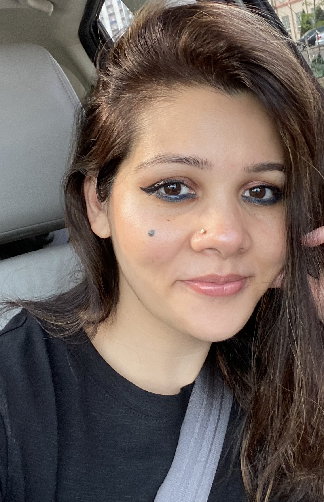

Hey There!!! I'm,
Husna Fatima
Seasoned BUSINESS and DATA Analyst Poised to Elevate Your Team's Performance

Hey There!!! I'm,
Seasoned BUSINESS and DATA Analyst Poised to Elevate Your Team's Performance
Get To Know More


Hello! I am Husna Fatima and I am currently pursuing Health Informatics technology from Centennial College with a major in Software and Health Information’s system. Because of my program, I have had the opportunity to work in teams in different projects to gather and analyze data, and then develop strategies to improve processes. My expertise in business analysis, project management, data analysis, and communication skills allow me to bridge the gap between business and technology, ensuring that projects are delivered on time, within budget, and meet the needs of all the stakeholders.